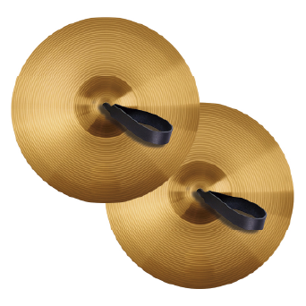

PLATILLOS
Los platillos o címbalos son instrumentos idiófonos de percusión por choque, consistentes en dos discos metálicos (bronce) con una concavidad interior y planos en los bordes, cuyos centros están perforados y atravesados por unas correas de cuero que sirven de asideras.
Hipaso de Metaponte, la invención de cuatro platillos de bronce, de iguales diámetros pero diferentes espesores, que al entrechocar producían cierto «acorde». Entre los griegos fueron considerados los platillos en general como instrumentos de uso femenino.
